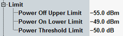

Limit
The requirements for the test are defined by 3GPP TS 34.121, section 5.4.4 "Out-of-synchronisation handling of output power".

The following limits can be set in the configuration dialog:
- "Power Off Upper Limit": The UE power measured, when the UE transmitter is off, is called "OFF power". According to 3GPP TS 34.121, section 5.5.1 "Transmit OFF Power", the measured value must be below -55 dBm (Qout value). The power off limit is used to detect whether the UE transmitter if OFF (point C) or NOT OFF (interval A-B).
- "Power On Lower Limit": The minimum controlled output power of a UE averaged over one slot has to be below -49 dBm (Qin value). This test requirement is defined in 3GPP TS 34.121, section 5.4.3 "Minimum Output Power". The power on limit is used to detect whether the UE transmitter is ON (point F) or NOT ON (interval C-E).
- "Power Threshold Limit" is not applied in the standard conforming version of the test. It is only relevant for "RX Level Strategy" ≠ "Max A off F Max". This limit is more suitable to monitor the on power periods and to check if the test result is still reliable or not, during these tests.
The power mask displayed in the following figure is defined by 3GPP. The level of DPCCH generated by the signaling application within DPCH complies 3GPP recommendations.

Out-of-sync power mask
Q out = threshold for the UE to switch off its transmitter
T off = timeout for the UE to switch off its transmitter (200 ms)
Q in = threshold for the UE to switch on its transmitter
T on = timeout for the UE to switch on its transmitter (200 ms)
The parameters of power mask are controlled by the signaling application in the combined signal path (CSP). See